Layout Check
Đối chiếu danh sách máy trên file layout với CSDL máy (Machine Database) trước khi mã hàng vào chuyền. Chạy trên Chrome hoặc Edge, không gửi dữ liệu đi đâu.
1. Giới thiệu
Mỗi mã hàng đi qua một vòng kiểm tra có 4 vai trò:
| Vai trò | Việc phải làm |
|---|---|
| Nhân viên IE | Mở layout, so với CSDL, lưu Đạt, Chấp nhận có ghi chú hoặc Không đạt. Chỉ Nhân viên IE lưu Đạt mới hoàn tất mã hàng. |
| IE Báo cáo máy | Quyết định sai lệch do CSDL hay do layout; sửa CSDL. |
| IE Tech | Sửa file layout khi được yêu cầu, hoặc xác nhận layout đúng, CSDL sai. |
| Giám sát | Tải kế hoạch hằng tuần, theo dõi từng bước, xử lý mã hàng quá 2 vòng. |
2. Cài đặt lần đầu trên mỗi máy tính
- Mở file
LayoutCheck.html(hoặcOpen LayoutCheck.bat) bằng Microsoft Edge hoặc Google Chrome. Khi dùng bản trên mạng nội bộ/GitHub Pages: mở đường dẫn do nhóm cung cấp. - Nhập Họ tên (luôn nhập giống nhau mỗi lần đăng nhập), chọn Vai trò và PU.
- Bấm Chọn… tại Thư mục dữ liệu, chọn thư mục
datadùng chung, bấm Cho phép / Allow. - Bấm Chọn… tại CSDL máy, chọn file Machine Database.
- (Không bắt buộc) bấm Chọn… tại Thư mục layout, chọn thư mục chung nơi IE lưu layout (thư mục lớn nhất chứa mọi layout).
- Bấm Bắt đầu.

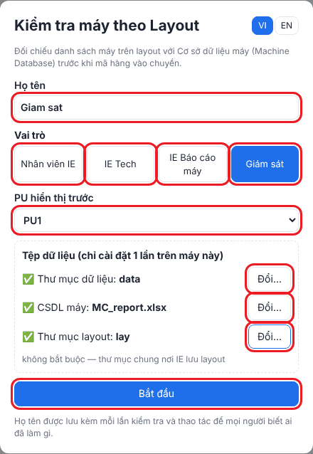
Danh sách PU lấy từ cột PU của data\Linemapping.xlsx (cột Line, PU). Khi thêm hoặc tách PU, chỉ sửa file này, không cần sửa phần mềm. Tên PU phải viết giống nhau ở mọi dòng (ví dụ PU2 SPORT); sau khi sửa, chọn lại thư mục data hoặc mở lại trang.
3. Giám sát: tải kế hoạch hằng tuần
- Đăng nhập với vai trò Giám sát.
- Bấm 📥 Tải kế hoạch, chọn file kế hoạch tuần (sheet
MasterPlan-Full, cộtLine,Style No,Date). - Nếu có thông báo chuyền chưa có PU: bổ sung vào
data\Linemapping.xlsx, bấm ⟳ Làm mới. - Theo dõi tab Tình trạng và Nhật ký thao tác.

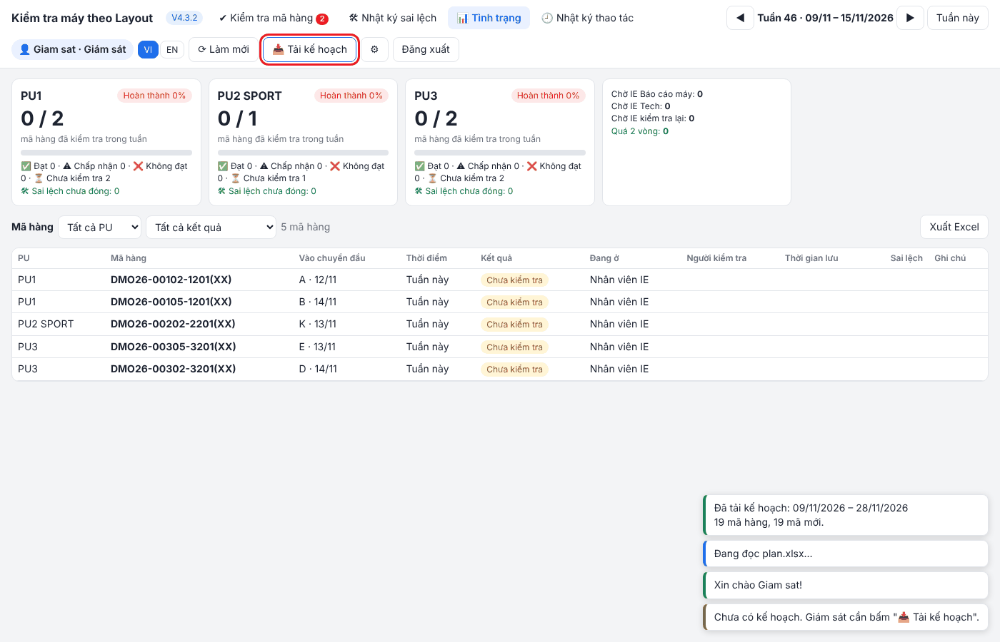
4. Nhân viên IE: kiểm tra mã hàng
4.1 Chọn mã hàng và layout
- Đăng nhập vai trò Nhân viên IE, chọn đúng PU. Cột trái Cần kiểm tra liệt kê các mã hàng vào chuyền đầu tiên trong tuần của PU; nhãn Gấp = vào chuyền trong 3 ngày tới.
- Lần đầu: bấm nút Chuyền phụ trách ở cột trái, tích các chuyền mình phụ trách, bấm Xong. Lựa chọn lưu trên máy; Bỏ lọc để xem mọi chuyền của PU. Ô Tìm chuyền trong bảng chọn chấp nhận nhiều chữ cách nhau bằng dấu phẩy hoặc dấu cách: gõ
J, Ksẽ hiện mọi chuyền bắt đầu bằng J hoặc K; ✓ Chọn tất cả đang hiển thị chỉ tick các chuyền đang hiện. - Chuyển công cụ: nút Trang chủ ở góc trên (và hai liên kết “Trang chủ”, “Mở IE Báo cáo máy” ở màn hình đăng nhập, kể cả sau khi đăng xuất) đưa bạn về trang chủ hoặc sang IE Báo cáo máy.
- Tìm mã hàng: mỗi tab (Kiểm tra, Sai lệch, Trạng thái, Nhật ký) có một ô tìm mã hàng; gõ một phần tên, không phân biệt hoa/thường và dấu gạch (ví dụ
00202). Đây chỉ là bộ lọc hiển thị, số đếm trên tab không đổi. - Bấm một mã hàng. Ở bước 1. CSDL máy, danh sách máy trong CSDL tự hiện (bấm “Xem danh sách máy”).
- Ở bước 2. File layout, phần mềm tự liệt kê file có tên chứa mã hàng: bấm Mở ở file đúng (nhãn “Đúng mã hàng”). Nếu không thấy: gõ một phần tên file vào ô tìm, bấm ⟳ Quét lại (khi vừa lưu file mới) hoặc 📂 Duyệt….
- Kiểm tra đúng sheet: các sheet có bảng máy được tích sẵn, tổng các sheet đã chọn hiển thị bên dưới. Có thể ＋ Thêm file khác nếu layout chia thành nhiều file.

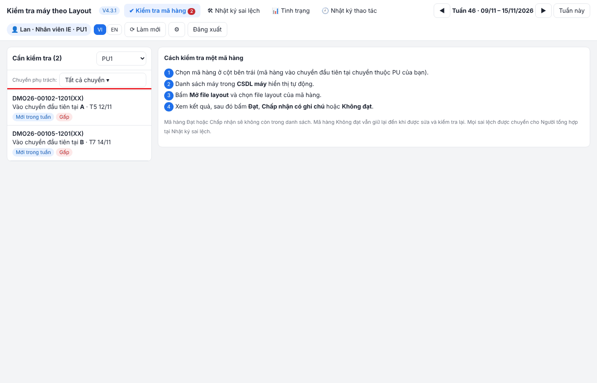

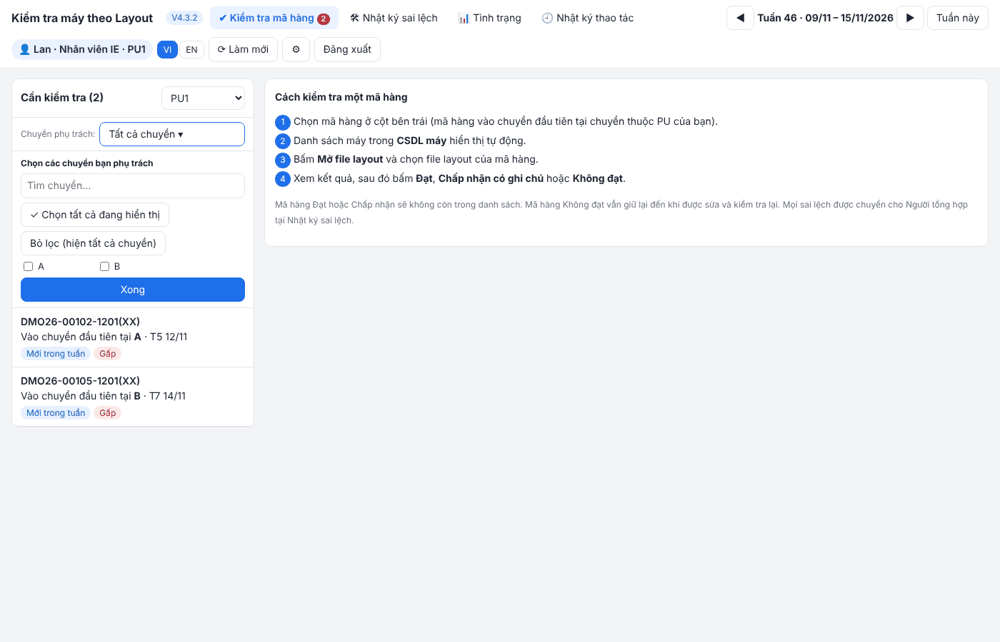

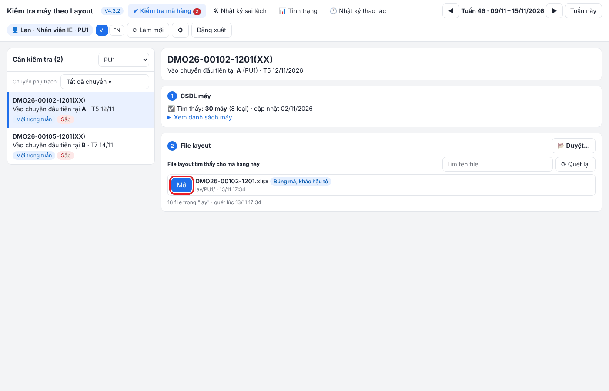
4.2 Đọc kết quả và lưu
Layout Check so sánh theo nhóm máy (CSDL ghi theo nhóm, layout ghi theo mã máy):
- Khớp theo nhóm máy: mọi nhóm có tổng số máy bằng nhau, dù mã máy trong nhóm khác nhau. Được lưu Đạt. Các mã máy khác nhau vẫn được liệt kê để tham khảo.
- Có … nhóm máy sai lệch: có nhóm khác tổng số. Không chọn được Đạt. Kết quả liệt kê nhóm sai lệch và từng mã máy.
- Mã máy chưa có nhóm trong CSDL được so sánh riêng từng mã.
- Cảnh báo “bảng máy cuối layout khác bảng công đoạn” (layout lớn chia thành nhiều layout nhỏ) chỉ là cảnh báo, không chặn Đạt.

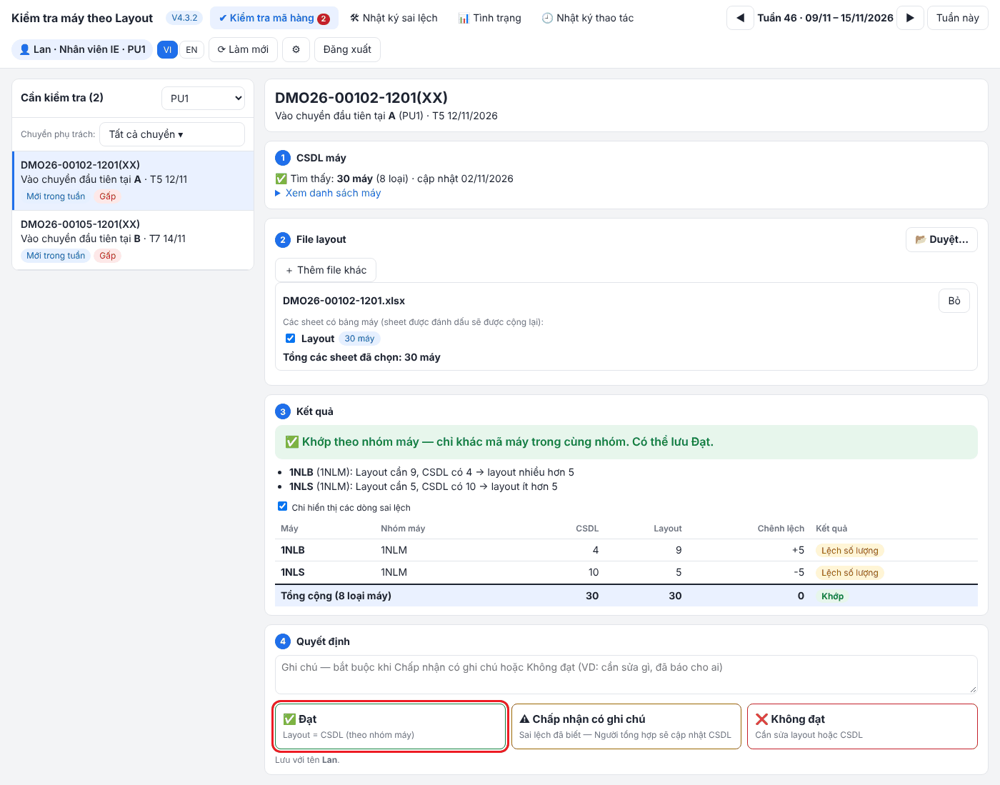

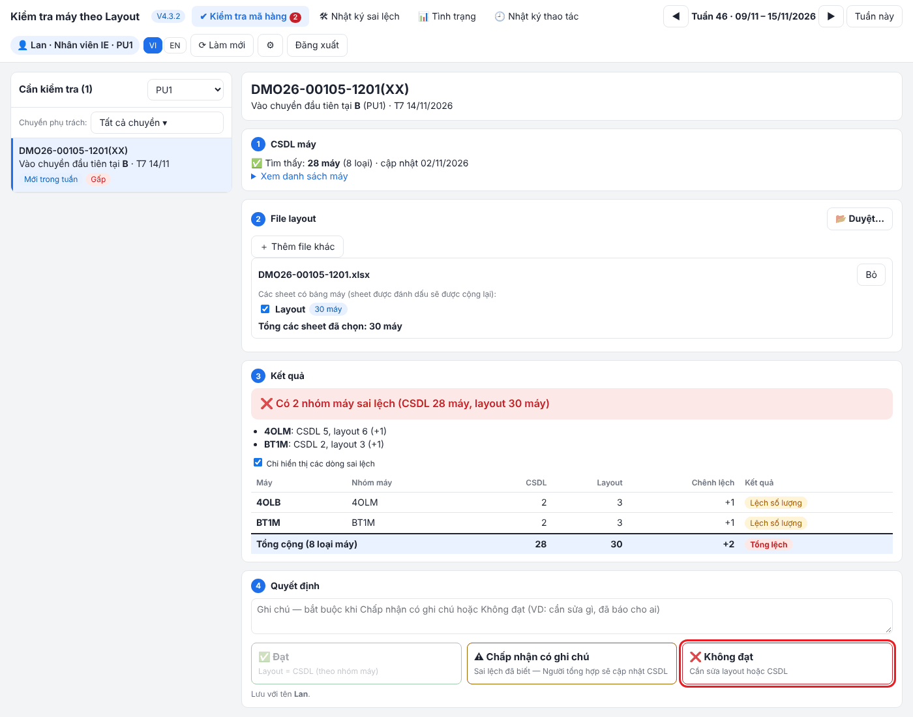
Ở bước 4. Quyết định:
| Nút | Dùng khi | Ghi chú |
|---|---|---|
| ✅ Đạt | Layout = CSDL theo nhóm máy | Không bắt buộc ghi chú. Mã hàng hoàn tất. |
| ⚠ Chấp nhận có ghi chú | Sai lệch đã biết; IE Báo cáo máy sẽ cập nhật CSDL | Bắt buộc ghi chú. |
| ❌ Không đạt | Cần sửa layout hoặc CSDL | Bắt buộc ghi chú (cần sửa gì, đã báo cho ai). |
4.3 Layout chỉ còn file PDF (kiểm tra thủ công)
Dùng khi layout cũ không còn file Excel mà chỉ có PDF.
- Ở bước 2, bấm 📂 Duyệt… chọn file
.pdf(hoặc chọn file PDF trong danh sách gợi ý). PDF hiện ở cột bên phải để vừa xem vừa nhập; Xem PDF tại đây mở lại khung, “Mở tab mới” mở PDF ở tab riêng, dấu ✕ đóng khung. - Nhập danh sách máy: gõ Mã máy và SL rồi bấm Thêm (hoặc Enter ở ô SL; ô mã máy gợi ý các mã đang có trong CSDL). Hoặc mở Dán danh sách máy (copy từ PDF), dán các dòng “mã máy số lượng” rồi bấm Đọc danh sách. Dòng Tổng và tiêu đề được bỏ qua. PDF dạng ảnh scan không copy được chữ thì nhập tay.
- Bắt buộc tích “Tôi đã đối chiếu từng dòng với file PDF” trước khi lưu Đạt hoặc Chấp nhận.

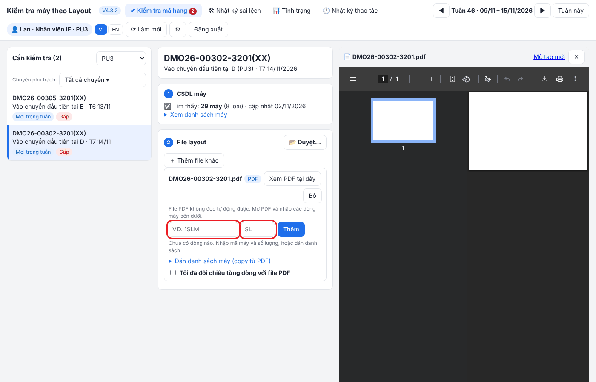

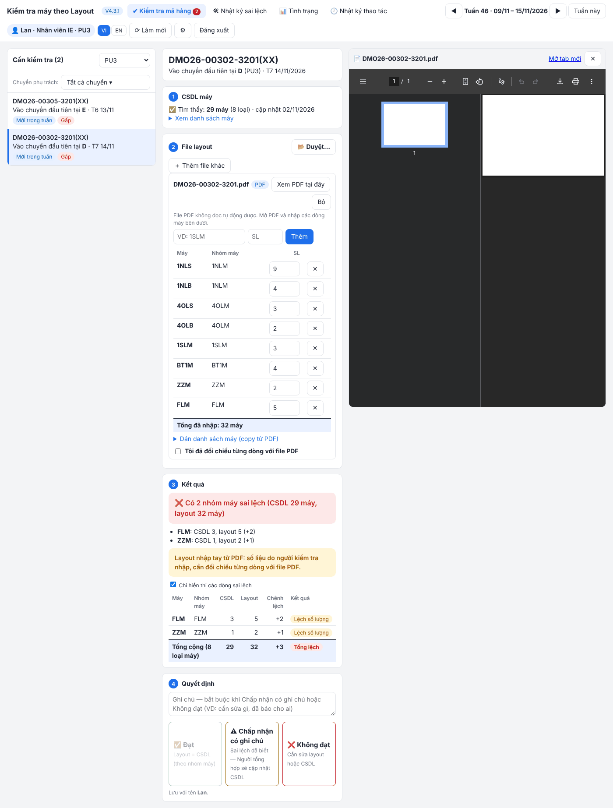
5. IE Báo cáo máy: xử lý sai lệch
Đăng nhập vai trò IE Báo cáo máy; tab 🛠 Nhật ký sai lệch hiện các mã hàng Không đạt. Mỗi thẻ ghi: ai phát hiện, ghi chú của IE, bảng máy sai lệch (CSDL lúc kiểm tra, Layout, CSDL hiện tại, Còn lệch) và “Đang ở” bước nào.

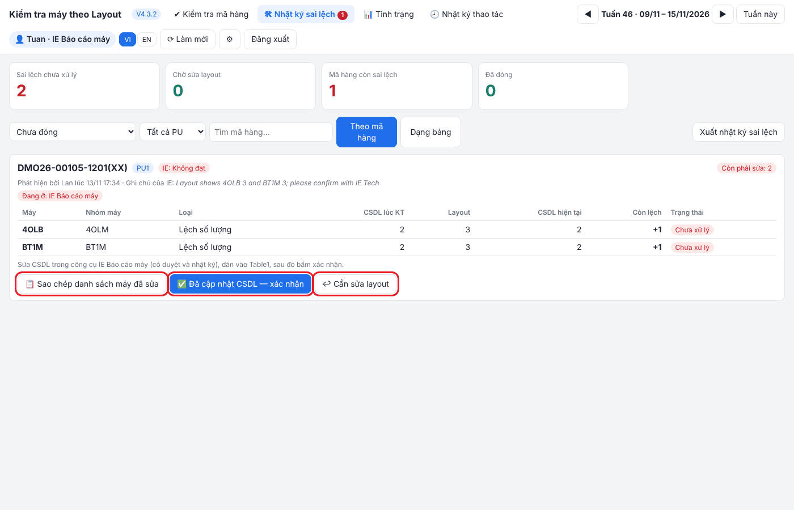
- CSDL sai (layout đúng): sửa CSDL trong công cụ IE Báo cáo máy (xem tài liệu của công cụ đó), hoặc bấm 📋 Sao chép danh sách máy đã sửa, mở file Machine Database, dán vào cuối sheet
Machine Database, lưu và đóng file Excel; sau đó bấm ✅ Đã cập nhật CSDL — xác nhận. Khi CSDL khớp layout (sai lệch = 0), mã hàng tự chuyển sang bước IE kiểm tra lại. - Layout sai: bấm ↩ Cần sửa layout và ghi rõ nội dung cần sửa. Mã hàng chuyển cho IE Tech.
data (activity, validations, variations).6. IE Tech: sửa layout
Đăng nhập vai trò IE Tech; tab đầu tiên đổi thành 🔧 Layout cần sửa và chỉ hiện các mã hàng của PU mình bị yêu cầu sửa layout. Đầu trang hiện yêu cầu của IE Báo cáo máy và các máy đang sai lệch.

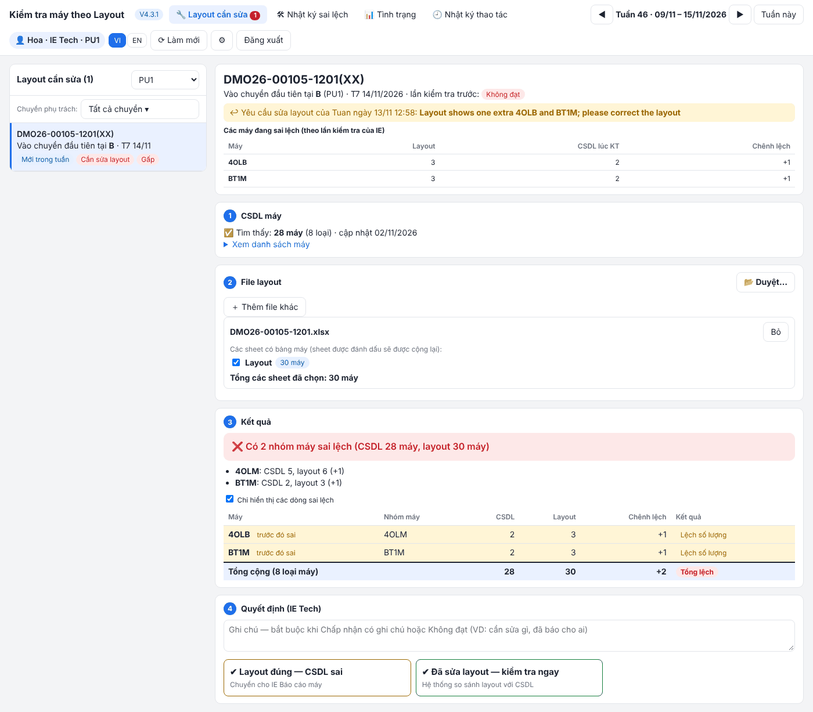
Có hai cách trả lời:
- ✔ Layout đúng — CSDL sai (ghi chú bắt buộc): chuyển trả IE Báo cáo máy để sửa CSDL.
- Sửa file layout trong thư mục chung, mở lại file (bấm Bỏ file cũ rồi 📂 Duyệt… hoặc chọn lại trong danh sách), rồi bấm ✔ Đã sửa layout — kiểm tra ngay. Hệ thống so sánh ngay: hết sai lệch thì mã hàng chuyển cho IE kiểm tra lại; còn sai lệch thì sửa tiếp hoặc chọn “Layout đúng — CSDL sai”.

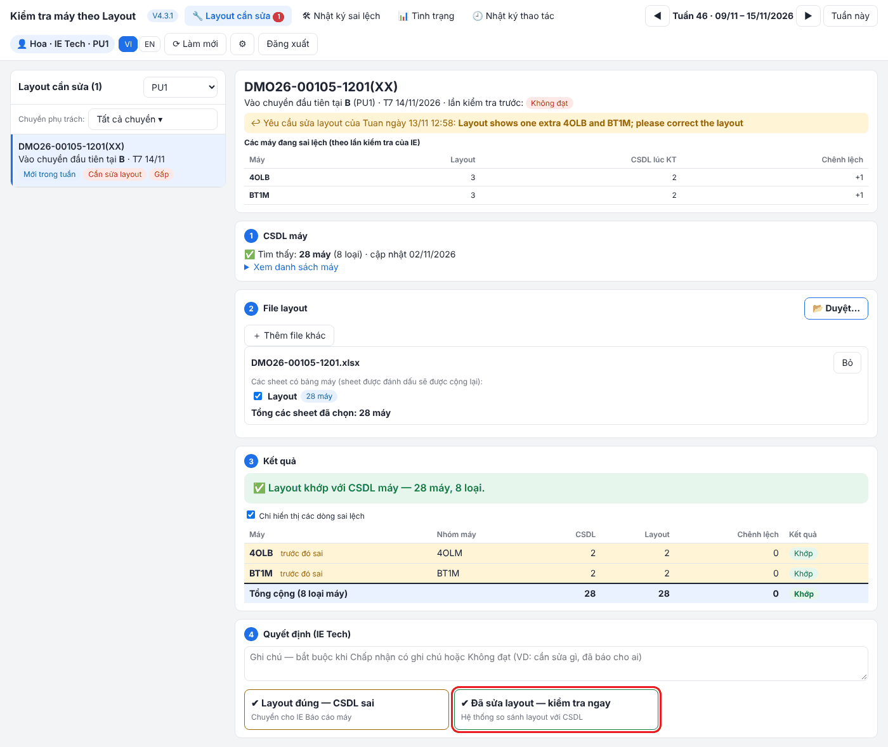
7. Nhân viên IE: kiểm tra lại
Mã hàng đã được sửa nằm đầu danh sách với nhãn Đã sửa — chờ IE kiểm tra lại. File layout lần trước tự mở lại, máy sai trước đó được tô màu. Lưu Đạt thì hoàn tất; Không đạt thì quay lại bước IE Báo cáo máy (vòng tiếp theo).

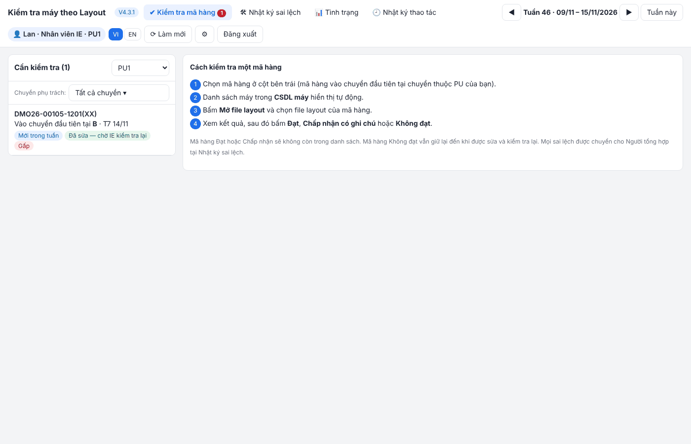

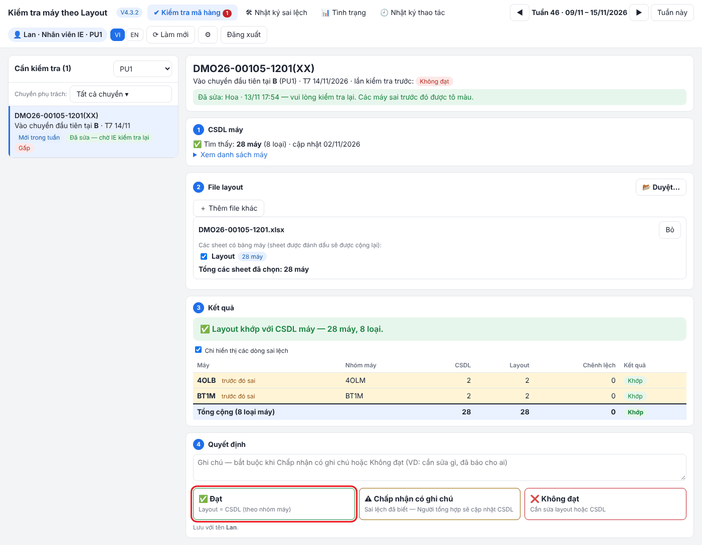
Các bước của một mã hàng
| Bước | Ai giữ | Chuyển sang |
|---|---|---|
| 1. Cần kiểm tra | Nhân viên IE | Đạt/Chấp nhận → Hoàn tất. Không đạt có sai lệch máy → bước 2. Không đạt nhưng không có sai lệch máy (nghi ngờ chính layout) → bước 3. |
| 2. Chờ IE Báo cáo máy | IE Báo cáo máy | CSDL sai: sửa CSDL, khi khớp → bước 4. Layout sai: “Cần sửa layout” → bước 3. |
| 3. Chờ IE Tech | IE Tech | “Layout đúng — CSDL sai” → bước 2. Đã sửa layout hết sai lệch → bước 4. |
| 4. Đã sửa — kiểm tra lại | Nhân viên IE | Đạt → Hoàn tất. Không đạt → bước 2 (vòng tiếp theo). |
Nhãn khác: IE Báo cáo máy đã duyệt (CSDL đã cập nhật từ layout; Nhân viên IE vẫn kiểm tra), 2 vòng — báo Giám sát (đã Không đạt 2 lần liên tiếp). Số trên mỗi tab = số mã hàng đang chờ người dùng đó.
8. Theo dõi: Tình trạng, Nhật ký

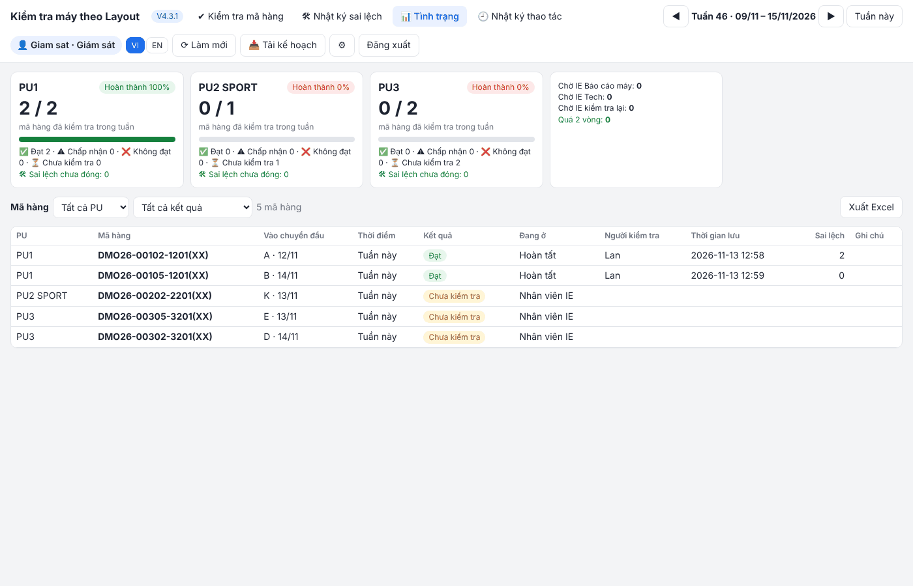

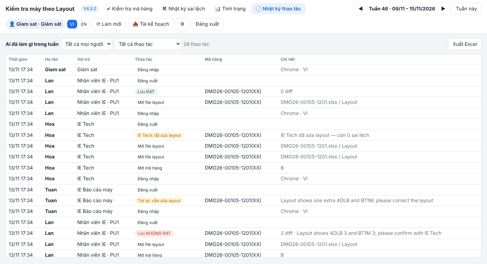

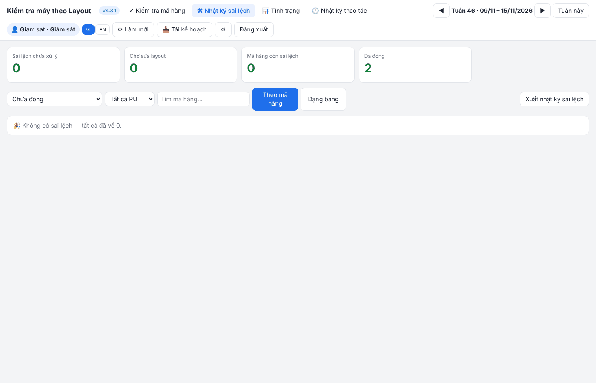
Mã hàng quá 2 vòng: Giám sát trao đổi với các bên; Giám sát có thể thực hiện thao tác của IE Báo cáo máy và IE Tech.
9. Quy tắc cần nhớ
- Chỉ Nhân viên IE lưu Đạt/Chấp nhận mới hoàn tất mã hàng. Công cụ IE Báo cáo máy chỉ ghi ghi chú “Đã duyệt” (không tính là kiểm tra).
- CSDL chỉ dùng các dòng có ngày mới nhất của mỗi mã hàng.
- Kết quả Đạt đã có trong
data\validationskhông bị ghi lại. - Máy dùng bản Layout Check cũ vẫn chạy bình thường (chỉ không hiển thị các nhãn mới).
- Không đổi tên, không xóa thư mục
activity,validations,variations,approvalstrongdata.
10. Lỗi thường gặp
| Hiện tượng | Cách xử lý |
|---|---|
| Không thấy file layout của mã hàng | Gõ một phần tên file vào ô tìm, bấm “⟳ Quét lại”, hoặc “📂 Duyệt…”. |
| “Mã hàng không có trong CSDL” | Kiểm tra mã hàng trong sheet Machine Database; gợi ý các mã cùng 11 ký tự đầu được hiển thị. |
| Layout báo sai lệch dù CSDL vừa được cập nhật | Từ V4.3.2 tự tải lại khi file đổi; nếu vẫn còn, bấm “⟳ Làm mới”. Kiểm tra file Machine Database đã được lưu (không còn mở ở chế độ chưa lưu trong Excel). |
| Trình duyệt hỏi lại quyền thư mục | Bấm “Cho phép / Allow”. |
| Danh sách PU không đúng | Sửa Linemapping.xlsx trong thư mục data, chọn lại thư mục data hoặc mở lại trang. |
| Sau khi cập nhật phiên bản trang web, giao diện cũ | Nhấn Ctrl+F5. |
| Chuyền chưa có PU | Thêm chuyền vào Linemapping.xlsx, bấm “⟳ Làm mới”. |